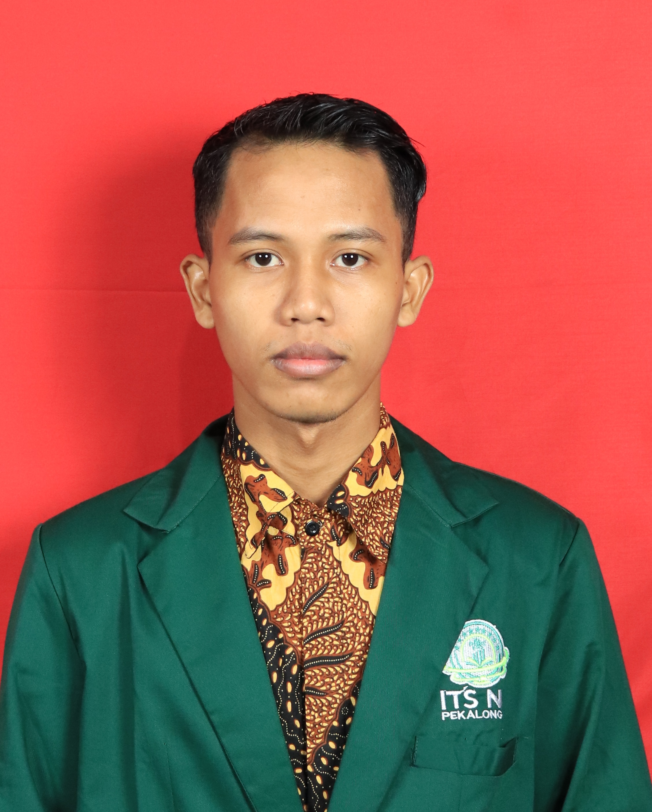

Muhammad Rifanudin
Web Developer | Designer | Tech Enthusiast
KAMPUS
ITSNU PEKALONGANPRODI
INFORMATIKAKELAS
IM23CAbout Me
Saya seorang pengembang web yang bersemangat dengan pengalaman lebih dari 5 tahun dalam membuat situs web yang dinamis dan mudah digunakan. Saya mengkhususkan diri dalam pengembangan frontend dengan pemahaman mendalam tentang HTML, CSS, dan JavaScript. Tujuan saya adalah merancang situs web yang memberikan pengalaman pengguna yang lancar dan antarmuka yang menarik.
Skills
- HTML
- CSS
- Figma
- UI/UX Design
- CorelDraw